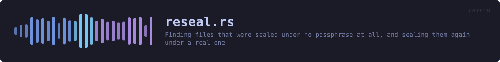

crates/veilvoice-crypto/src/reseal.rs
veilvoice-crypto · 538 lines · read the source here · or on GitHub
Finding files that were sealed under no passphrase at all, and sealing them again under a real one.
The fault this repairs
Sealing with the app lock became the default in VeilVoice 0.1.15. The window captured the app-lock passphrase as the lock opened, but wiped the field before the sealing step collected it, so what reached container::seal_with_password was an empty slice. Every release from 0.1.15 to 0.1.22 could therefore write a recording, and the integrity record beside it, sealed under nothing.
Such a file looks exactly like any other sealed file. It carries the magic, a real salt, real Argon2id costs and a valid tag, and it opens for anybody who passes an empty passphrase, which is to say for anybody at all. Nothing in it is corrupt, so nothing reports it; the only way to know is to try the empty passphrase and see whether the tag verifies. That is what this module does.
It looks before it touches
look answers for one file and sweep for a folder, and neither changes anything. reseal is the half that writes, and it takes one path at a time, so what gets rewritten is a file somebody has seen named.
Judging a file costs one Argon2id derivation, but only for files that are actually VeilVoice password containers: anything else is refused by the header parse, which happens before any memory is asked for. A folder of ordinary files is swept in the time it takes to read them.
The derivation is capped at UNATTENDED_MAX_M_COST(kdf::KdfParams::UNATTENDED_MAX_M_COST) rather than the ordinary ceiling, because a sweep is handed whatever is in the folder rather than a file somebody chose. A container declaring an absurd memory cost is reported as Standing::Unreadable instead of being allowed to decide how much memory this process asks the operating system for.
It refuses anything it did not find open
reseal rewrites a file only when that file opens with an empty passphrase, and reports Error::NotSealedUnderNothing otherwise. The refusal is the safety property, not a convenience: a repair that rewrote a file already sealed under a real passphrase would be destroying the recording it was asked to protect, and it would be doing so to the files that were never affected. It also makes the tool safe to run twice, which matters because the first run may stop part-way through a folder.
The new container is opened again with the new passphrase and compared against what came out of the old one, before anything is written. Only then does crate::privatefile::replace_owner_only put it in place, as a write beside the file followed by a rename, so an interrupted repair leaves the original rather than half of a replacement.
What it cannot do
It only knows about folders it is given. A recording exported somewhere else, copied to another machine, or already sent to somebody is outside anything this can reach, and a file that was sealed under nothing and has since been read by somebody else stays read: resealing closes the exposure from now on, it does not undo it. WARNING is the wording that says so, kept here so that the window and the command line say the same thing.
In plain words
Some versions of VeilVoice locked your recordings with a blank password by mistake, which means they are not really locked at all. This finds those files and locks them properly with your real password.
It checks each file by trying the blank password on it. If the file does not open that way it is already locked properly and this leaves it completely alone. Nothing is sent anywhere, and your recordings do not change: the same audio comes out, under a lock that now needs your password.
WHAT THIS FILE CONTAINS
538 lines defining 6 functions (5 public), 2 types and 2 constants. Everything below is read out of the source, so it cannot disagree with the code.
The types it owns.
enum Standingline 109 · Where one file stands with respect to the empty passphrase.struct Foundline 138 · One file a sweep looked at, and what it found.
What happens when it runs. These are the ways in: public, and nothing else in this file calls them, so they are what an outside caller reaches first.
Standing::needs_repairline 131 · Whether reseal would rewrite a file in this state.sweepline 206 · Judge every file under dir, deepest folders included.
reachesgather,look,standingresealline 264 · Seal path again under password, if and only if it opens under none.
WHAT CALLS WHAT
The functions this file defines, and the calls between them. An edge means the callee's name appears, called, inside the caller's body. This is a syntactic reading, not a type-resolved one.
The same graph as Mermaid source
%%{init: {"theme":"base","themeVariables":{"background":"#1a1b26","primaryColor":"#1f2335","primaryTextColor":"#c0caf5","primaryBorderColor":"#7aa2f7","secondaryColor":"#16161e","tertiaryColor":"#16161e","lineColor":"#737aa2","textColor":"#c0caf5","mainBkg":"#1f2335","nodeBorder":"#7aa2f7","clusterBkg":"#16161e","clusterBorder":"#2f3549","fontFamily":"ui-monospace, SFMono-Regular, Consolas, monospace","fontSize":"14px"}}}%%
flowchart TD
n_needs_repair(["Standing::needs_repair<br/>line 131"])
n_standing["standing<br/>line 150"]
n_look["look<br/>line 177"]
n_sweep(["sweep<br/>line 206"])
n_gather["gather<br/>line 214"]
n_reseal(["reseal<br/>line 264"])
n_gather --> n_look
n_look --> n_standing
n_sweep --> n_gather
click n_needs_repair href "https://github.com/tilas01/veilvoice/blob/main/crates/veilvoice-crypto/src/reseal.rs#L131" "open the source"
click n_standing href "https://github.com/tilas01/veilvoice/blob/main/crates/veilvoice-crypto/src/reseal.rs#L150" "open the source"
click n_look href "https://github.com/tilas01/veilvoice/blob/main/crates/veilvoice-crypto/src/reseal.rs#L177" "open the source"
click n_sweep href "https://github.com/tilas01/veilvoice/blob/main/crates/veilvoice-crypto/src/reseal.rs#L206" "open the source"
click n_gather href "https://github.com/tilas01/veilvoice/blob/main/crates/veilvoice-crypto/src/reseal.rs#L214" "open the source"
click n_reseal href "https://github.com/tilas01/veilvoice/blob/main/crates/veilvoice-crypto/src/reseal.rs#L264" "open the source"
classDef entry fill:#1f2335,stroke:#7aa2f7,color:#c0caf5
class n_needs_repair,n_sweep,n_reseal entry
classDef api fill:#1f2335,stroke:#7dcfff,color:#c0caf5
class n_standing,n_look api
classDef helper fill:#1f2335,stroke:#bb9af7,color:#c0caf5
class n_gather helperThis site loads no third-party script, so it cannot run Mermaid; the diagram above is the same nodes and edges drawn by the generator instead. GitHub renders the source below directly.
ITEMS
| Item | Line | Documentation |
|---|---|---|
NOTICE pub const | 88 | The one line that points at the repair, for somewhere a paragraph does not fit. |
WARNING pub const | 95 | What to tell somebody running VeilVoice 0.1.23 for the first time. |
Standing pub enum | 109 | Where one file stands with respect to the empty passphrase. |
Standing::needs_repair pub fn | 131 | Whether reseal would rewrite a file in this state. |
Found pub struct | 138 | One file a sweep looked at, and what it found. |
standing pub fn | 150 | Judge the bytes of a file. |
look pub fn | 177 | Judge one file on disk. |
sweep pub fn | 206 | Judge every file under dir, deepest folders included. |
gather fn | 214 | The recursive half of sweep. |
reseal pub fn | 264 | Seal path again under password, if and only if it opens under none. |